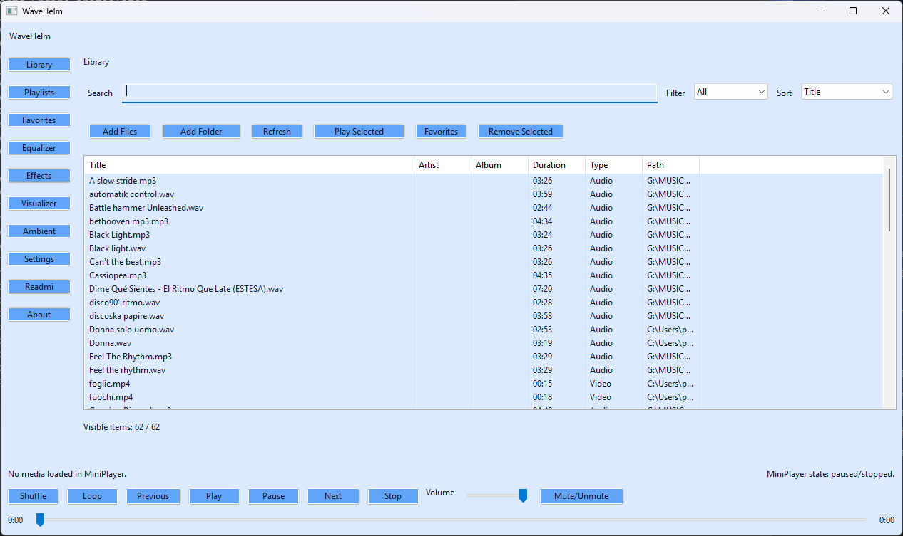
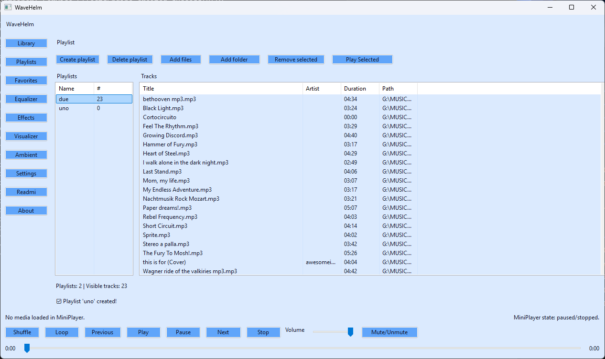
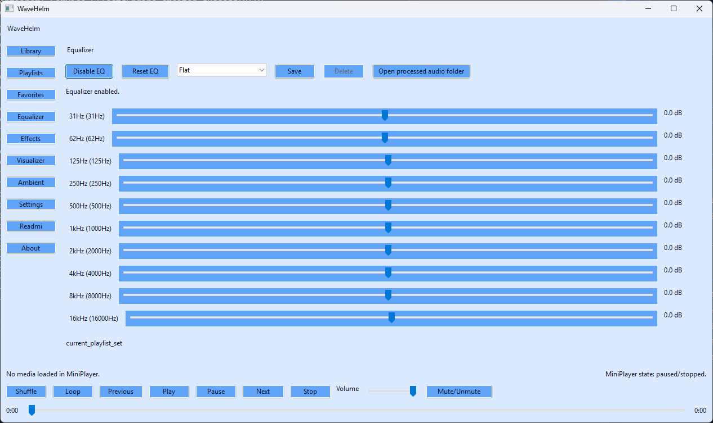
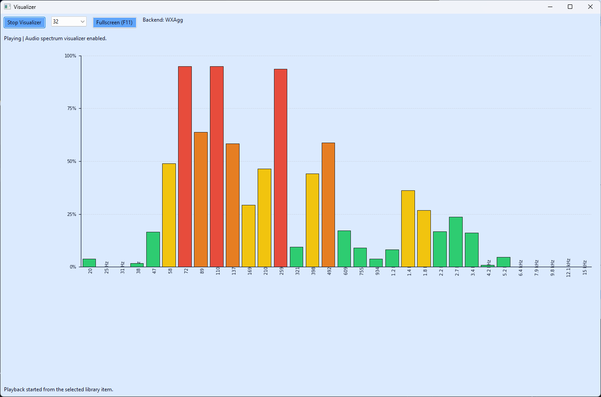
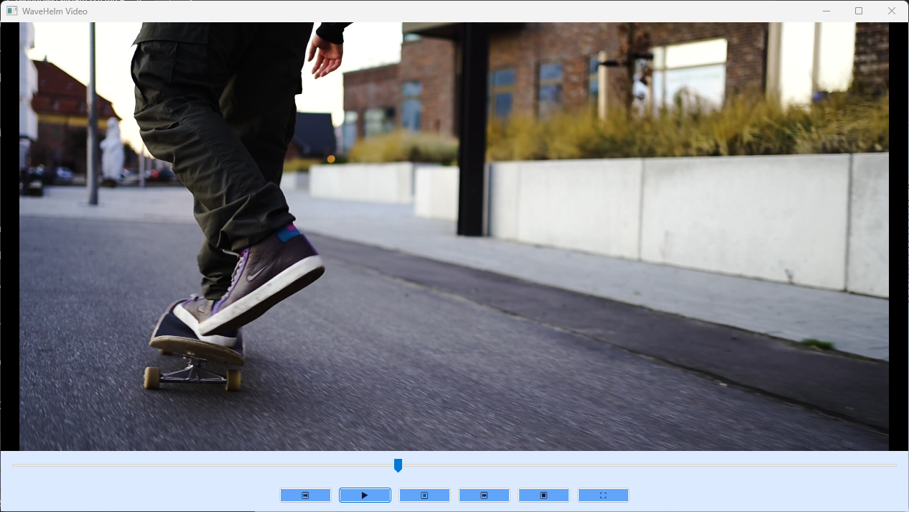

Playback and library workflow
Import files or folders, search and sort your local catalog, reopen favorites, and play media from the library, playlists, or direct selection flows.
WaveHelm is a Windows desktop media player built around a wxPython shell, Media Foundation video playback, local library workflows, playlists, favorites, equalizer, effects, ambient playback, and a detachable real-time visualizer.

A single desktop product instead of a feature demo.
Import files or folders, search and sort your local catalog, reopen favorites, and play media from the library, playlists, or direct selection flows.
Built-in equalizer, effect controls, processed-audio export paths, and a separate ambient playback layer for mixed listening sessions.
Maintained Windows runtime with Media Foundation video playback, selectable audio and subtitle tracks, and a detached video window.
These are the screenshots most useful for a public project page and for Microsoft Store-facing material.



